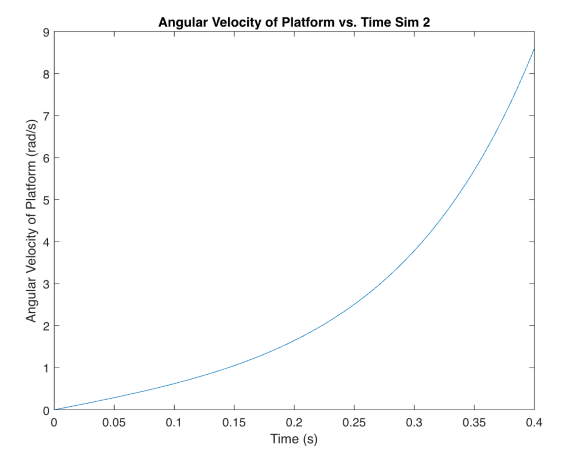
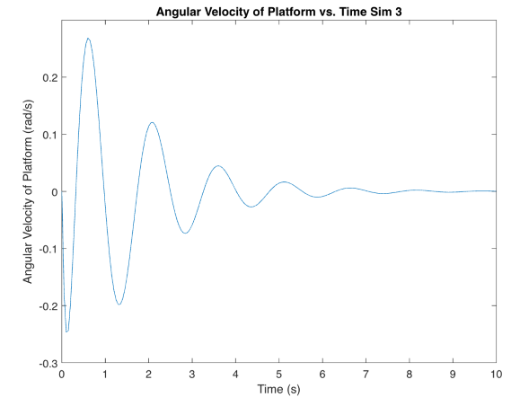

|
My Project
|


|
|
My Project
|
|
The block diagrams shown below represent the two controller models that were used to run the following simulations.
The following simulations were run using the open loop model and show the dynamic responses for the state variables x, θ, ̇x, and θy. In the first simulation the ball is at rest directly above the center of gravity of the plate. In the second simulation, the ball is at rest 5cm offset from the center of the plate.
This plot is exactly what is expected. The ball is resting on the center of the plate, so without any disturbances, there should be no fluctuation in the plate's angle.
This plot is exactly what is expected. The ball is resting on the center of the plate, so without any disturbances, there should be no fluctuation in the ball's velocity.
This plot is exactly what is expected. The ball is resting on the center of the plate, so without any disturbances, there should be no fluctuation in the plate's angular velocity.
The ball is offset by 5 cm, so it will tilt the plate with its weight and eventually fall off the plate since there is no feedback to correct for this. This is depicted in the plot.
The angle of the platform steadily increases as the ball rolls towards the edge, creating a larger moment. This is shown in the figure above.
The figure above depicts the velocity of the ball relative to the plate. It initially starts at rest, but as the plate tilts due to the ball's weight the velocity of the ball increases, until it finally falls off the plate.

The figure above shows the angular velocity of the plate. As the ball rolls further away from the center, it creates a larger moment which then creates an angular acceleration for the plate. This shows why the angular velocity is increasing over time.
For this simulation, the ball will again be at rest and offset 5cm from the center of the plate , but this time the closed loop model will be used, so there should be some form of corrective action.
The figure above depicts the position of the ball relative to the plate's centerpoint. The ball starts at a position of 5 cm away from the center and oscillates about the center due to the closed loop control system. It finally reaches a steady state at the center of the plate, which is the desired outcome.
The figure above depicts the angle of the plate relative to its horizontal initial position. The ball starts at a position of 5 cm away from the center and oscillates about the center due to the closed loop control system. The input tilts the plate, moving the ball towards the center until it overshoots. This process continues until the ball reaches steady state at the center and the plate reaches steady state at a horizontal position.
The figure above depicts the velocity of the ball relative to the plate's centerpoint. The ball starts at rest, until the plate tilts from the weight of the ball. It starts to move along with the plate until the system tilts the plate so the ball moves toward the center of the plate. The velocity oscillates as the tilting of the plate oscillates, until it finally reaches a steady state of 0.

The figure above depicts the angular velocity of the plate. The plate gets subjected to an input torque to steady the ball in the center of the plate at its resting position. The angular velocity of the plate constantly flips until it finally reaches a steady-state of 0.